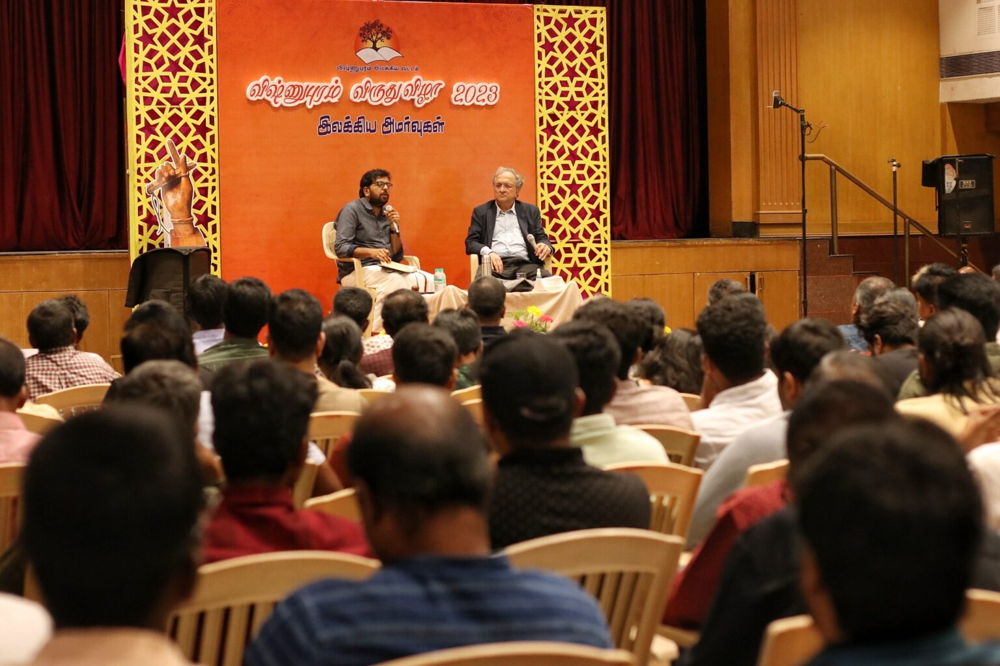
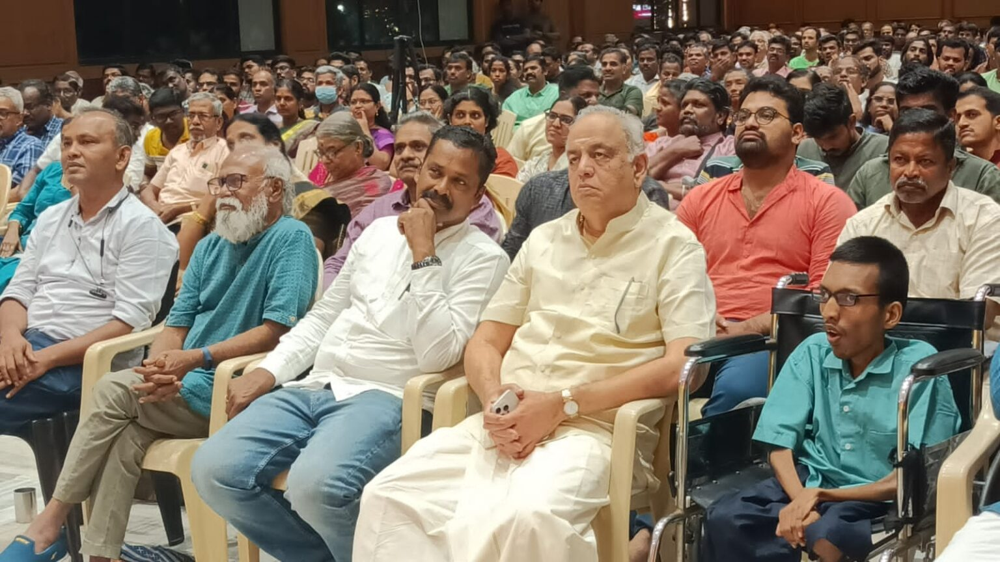
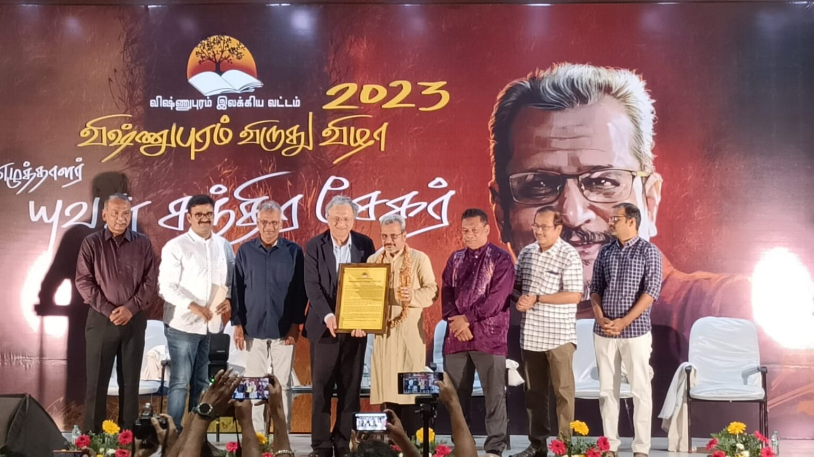
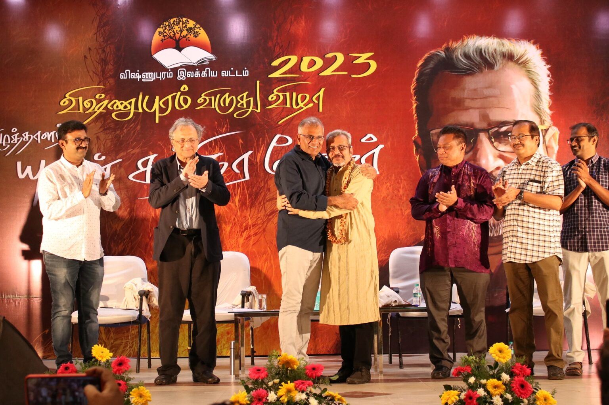
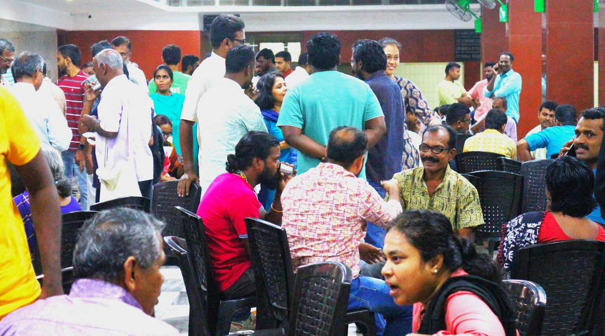
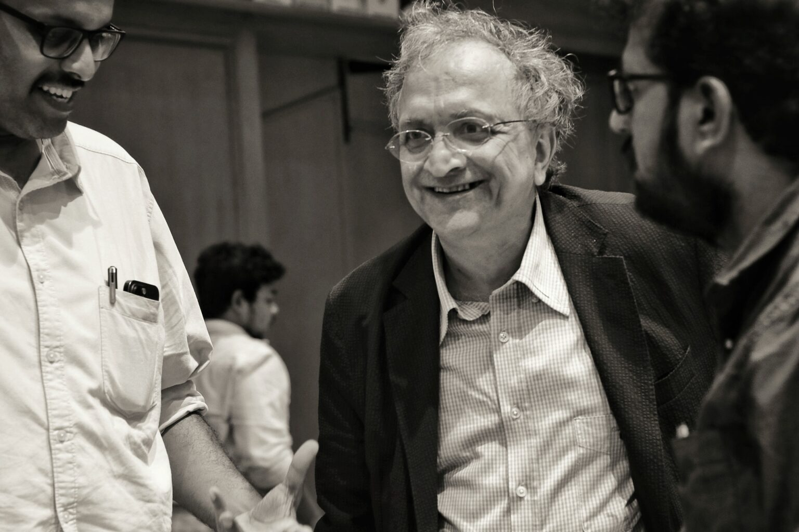
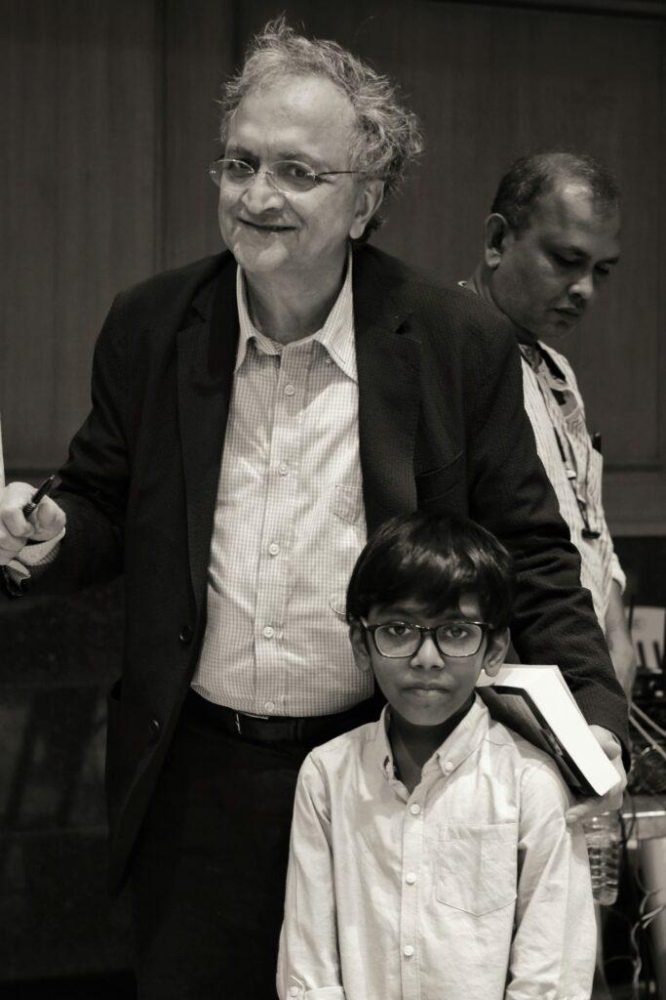
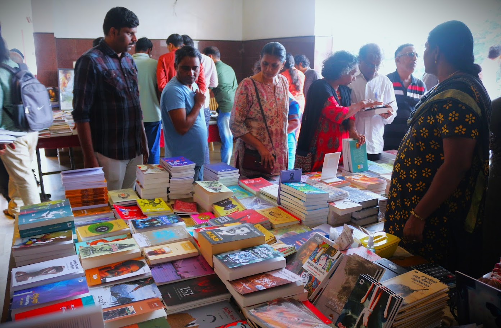
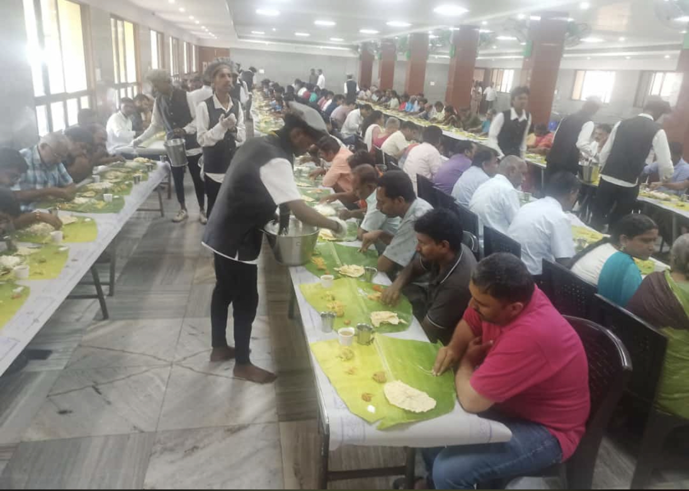
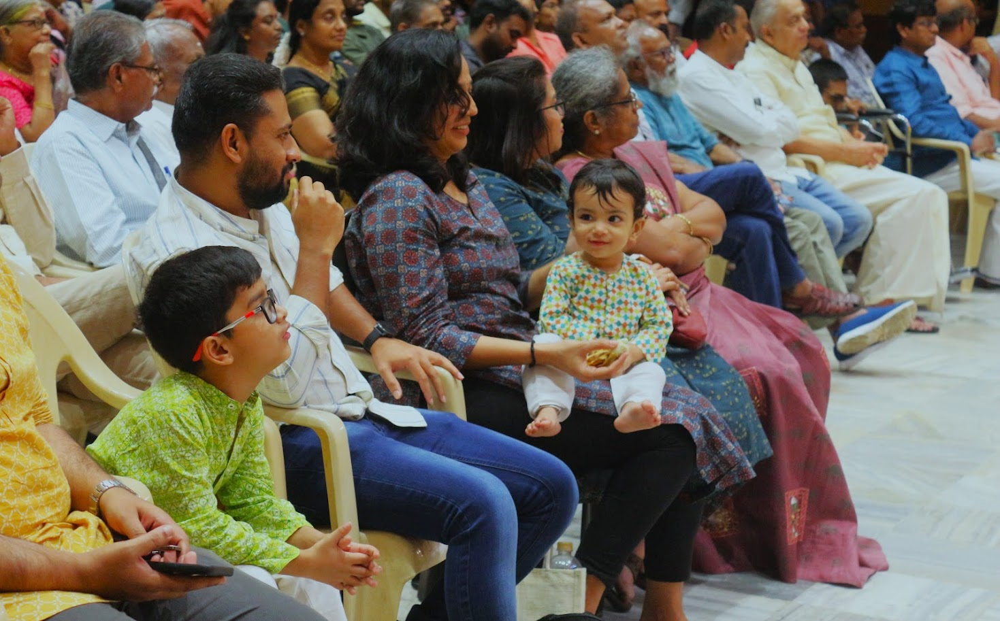

Living Tamil Association for World Literature (LTAWL)
The 2023 Vishnupuram Literary Circle Award went to the writer Yuvan Chandrasekar — announced not by letter, but by a group of friends who travelled to tell him in person — translated from the original Tamil account.
The 2023 Vishnupuram Literary Circle Award was announced for the writer Yuvan Chandrasekar. True to the Circle's informal, reader-driven character, the news was not simply published — a group of friends from the Vishnupuram circle, including Ja. Rajagopalan, Soundararajan, Kaliprasad, Kavitha, Chinnasamy and Vignesh Hariharan, travelled to Yuvan's own residence to tell him in person and to invite his family to the ceremony itself.
The celebration was set for 16–17 December 2023 at the Rajasthani Hall in Coimbatore, with an open invitation extended to friends of Vishnupuram everywhere.

The second day opened early. Malay-language scholar and Tamil Wiki contributor Arvin Kumar led a 9 a.m. session on Malay literature and its connections to Tamil writing, drawing out how political division — much as between Indian and Pakistani Urdu, or Indian and Bangladeshi Bengali — had shaped distinct literary traditions even within a shared language.
He was followed by the Malaysian author S.M. Shakir, who spoke mostly in English with occasional Malay asides to a hall that had filled past its 800-seat capacity, with a further hundred people standing outside. Shakir later wrote, in Malay, of his surprise at seeing serious literature draw so many young readers — “a phenomenon rarely seen anywhere in the world today.”


Midway through the day, the historian Ramachandra Guha arrived from Coonoor as a guest of the festival. In conversation with readers, Guha — known for turning his biographer's attention to lesser-known figures who shaped modern India, among them the Oxford-educated wanderer-turned-Gandhian Verrier Elwin and the Dalit cricketer Palwankar Baloo — described history as sitting at the meeting point of literature and social science: it demands the same narrative craft as fiction, built instead from the discipline of documentary research.
Asked about the independence of the intellectual, Guha was direct: scholars, he said, need to keep their distance equally from government and opposition alike, regardless of their own political sympathies. On the pessimism of Western observers who had once doubted India's democracy would survive Gandhi and Nehru, he suggested those predictions had simply underestimated how resilient India's democratic foundations would prove to be. He also spoke candidly about his own reading habits — drawn more to Tolstoy and to European and translated fiction than to contemporary Indian writing in English, which he found less aesthetically rewarding by comparison.


The afternoon belonged to Yuvan Chandrasekar himself, in a long, wide-ranging conversation moderated by Jeyamohan that moved through his musical interests, his narrative innovations and his more experimental forms. Yuvan named three people as central to his development as a writer — Sundara Ramasamy, Devadathan, and his longtime friend Tandapani — saying plainly that had Tandapani not been his first, unsparing reader, he might never have published at all. Tandapani was in the hall, and Jeyamohan asked him to stand so the audience could see the friendship being honoured alongside the writer himself. Nanjil Nadan presented Yuvan with a shawl — a gesture Jeyamohan noted had once been controversial in Tamil literary circles that resisted any formal, public honouring of writers.
A documentary on Yuvan, Suzharpathaiyadrigan — made by the poet Anandkumar and filmed by Sruti TV — premiered before the evening session to visible emotion from Yuvan's family. Ramachandra Guha, who stayed to watch it, called it among the finest documentaries on a writer he had seen.


A large portrait of Yuvan, painted by Shanmugavel, stood on the stage for the formal evening ceremony. Sendil Kumar and K. V. Arangasamy announced the Vishnupuram Literary Circle's award; Shakir brought a note of recognition from Malaysian literary circles, and Su. Venugopal offered commemorative gifts on behalf of the gathering. The evening, and the festival, closed the way it usually did — with a full group photograph of writers, readers and volunteers together, and conversation and song running past midnight.




Translated and adapted from the original Tamil accounts: jeyamohan.in/194813, jeyamohan.in/194916 (a conversation with Ramachandra Guha) and jeyamohan.in/188495